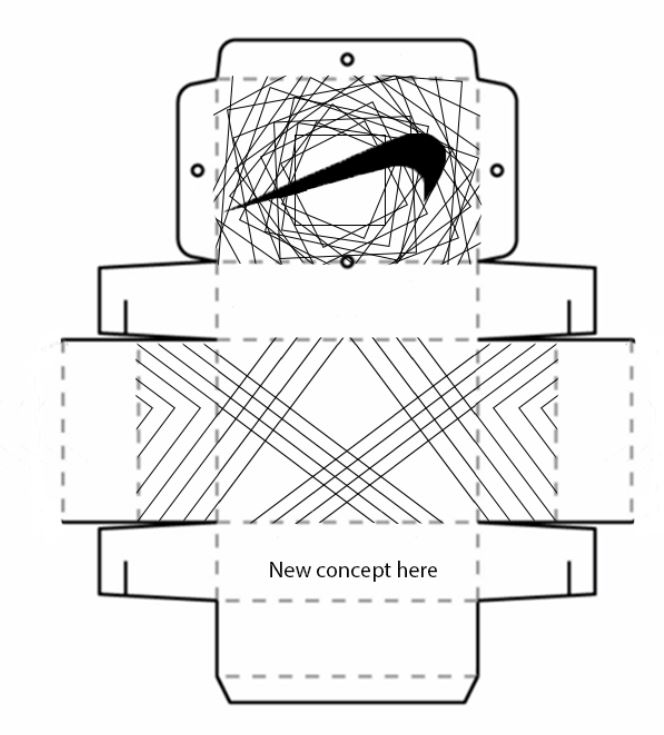

I pride myself on being someone who always has something going on. Whether that be academically, through sports, or through competitions, keeping busy is something that I enjoy doing.
As such, here are some of the projects and things i've been working on recently.
Hackathon
One of the thing I've been doing recently is joining Hackathons. I've been doing them with my friend Saif, and we recently got first place in a hackathon hosted Saturday the 26th of February.
The Hackathon was hosted by a group of users on Devpost and we entered a week before the competition started. See our results to the right!
Hackathon
We developed a program that asked a user for their vitals (blood pressure, height, temperature, etc.) and then gave them information based on their input.
If you would like to see the program or the competition, contact me here, or watch our video below.
Graphic design
I am currently doing my final project for Graphic Design 2. Our project is to create a retail box for a product of our choice. I chose to redesign a shoebox for nike, specifically one for Kyrie Irving. I am currently in the process of designing it, but when finished it will hopefully look professional
Graphic design
The box still needs to be completed from the bottom and colored, but other than that it is near completion. You can also make physical copies of the box, meaning that when printed out and folded it will be the actual shape of a shoebox.
This is it in it's current state.

Drawing
I've been trying to improve my drawing ability on photoshop for a few years now. My school, EPS, provides photshop for free and as such I draw with it in my free time. I store them in my onedrive folder, and if you would like to acess them, contact me here. (A snip of it is provided on the right)
Drawing
I've spent the last few years working on lots of different skills within drawing, specifically body proportions and anatomy. I had little to no art experience prior to this, so I've made many projects and folders to orgainze this process. I have not focused on one specific artstyle, but in the future I plan to focus on a manga/comic book like art style.